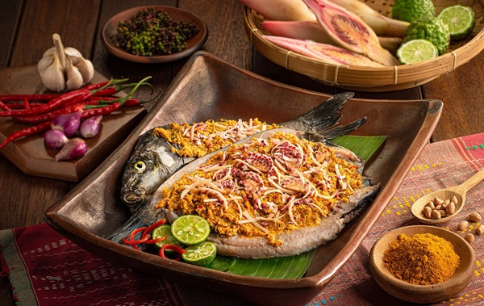

Soto Medan
Soto berkuah santan khas Medan dengan cita rasa gurih dan rempah khas Sumut.
Bahan-bahan:
- 500 gr daging sapi, potong dadu
- 1 liter santan kelapa
- 3 siung bawang putih, haluskan
- 2 batang serai, memarkan
- 2 lembar daun salam
- 1 sdt ketumbar bubuk
- Garam dan merica secukupnya
- Daun bawang, bawang goreng, dan jeruk nipis untuk taburan
Cara membuat:
- Rebus daging sapi hingga empuk, sisihkan kaldunya.
- Tumis bawang putih, serai, dan daun salam hingga harum.
- Masukkan tumisan ke dalam kaldu daging, tambahkan santan dan ketumbar bubuk.
- Masak dengan api kecil hingga mendidih dan bumbu meresap.
- Sajikan dengan taburan daun bawang, bawang goreng, dan perasan jeruk nipis.
Bika Ambon
Kue khas Medan dengan tekstur kenyal dan aroma pandan yang harum.
Bahan-bahan:
- 200 gr tepung tapioka
- 150 gr gula pasir
- 200 ml santan kental
- 3 butir telur
- Daun pandan 2 lembar, simpulkan
- Ragi instan 1 sdt
- Air secukupnya
Cara membuat:
- Campur tepung tapioka, gula, telur, dan santan, aduk rata.
- Tambahkan ragi dan daun pandan, diamkan selama 1 jam hingga adonan berbuih.
- Tuang adonan ke loyang, panggang dalam oven suhu 170°C selama 45 menit.
- Angkat dan dinginkan sebelum disajikan.
Arsik Ikan
Ikan mas khas Batak yang dimasak dengan bumbu arsik pedas dan asam khas.
Bahan-bahan:
- 1 ekor ikan mas, bersihkan
- 5 siung bawang merah
- 3 siung bawang putih
- 5 buah cabe merah
- 2 cm jahe
- 2 cm kunyit
- 2 batang serai, memarkan
- 5 lembar daun jeruk
- Air asam jawa dan garam secukupnya
Cara membuat:
- Haluskan bawang merah, bawang putih, cabe, jahe, dan kunyit.
- Tumis bumbu halus bersama serai dan daun jeruk hingga harum.
- Masukkan ikan mas, beri air asam dan garam, masak hingga matang dan bumbu meresap.
- Sajikan hangat dengan nasi putih.
Saksang
Masakan khas Batak yang menggunakan daging babi atau kerbau dimasak dengan darah dan rempah khas.
Bahan-bahan:
- 500 gr daging babi/kerbau, potong kecil
- 250 ml darah babi/kerbau
- 5 siung bawang merah
- 3 siung bawang putih
- 5 buah cabai merah
- 2 cm jahe
- 2 cm kunyit
- Garam dan merica secukupnya
Cara membuat:
- Haluskan bawang merah, bawang putih, cabai, jahe, dan kunyit.
- Tumis bumbu halus hingga harum, masukkan daging, aduk rata.
- Tuang darah, masak dengan api kecil hingga daging empuk dan bumbu meresap.
- Sajikan dengan nasi putih dan daun ubi tumbuk.

Naniura
Hidangan ikan mentah khas Batak yang diasamkan dengan jeruk nipis dan rempah.
Bahan-bahan:
- 300 gr ikan mas segar, iris tipis
- 3 buah jeruk nipis, ambil airnya
- 5 siung bawang merah, iris tipis
- 2 buah cabai rawit, iris tipis
- Garam dan gula secukupnya
Cara membuat:
- Campur ikan dengan air jeruk nipis, bawang merah, cabai, garam, dan gula.
- Diamkan selama 30 menit agar ikan berubah warna dan bumbu meresap.
- Sajikan segar sebagai hidangan pembuka atau lauk pendamping.
Saksang Padang
Varian saksang dengan rempah dan cita rasa khas Sumatera Utara yang kaya.
Bahan-bahan:
- 400 gr daging babi, potong kecil
- 200 ml darah babi
- 6 siung bawang merah
- 4 siung bawang putih
- 5 buah cabai merah
- 3 cm jahe
- 3 cm kunyit
- Garam dan merica secukupnya
Cara membuat:
- Haluskan bumbu, tumis hingga harum.
- Masukkan daging, aduk rata.
- Tuang darah, masak dengan api kecil hingga matang dan bumbu meresap.
- Sajikan hangat dengan nasi dan sayur daun singkong.